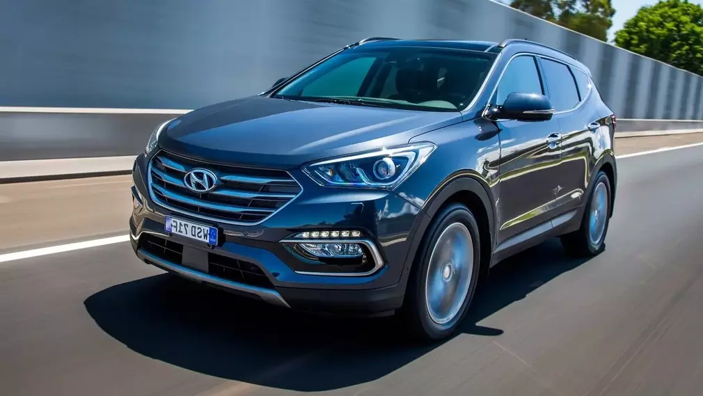

Volkswagen Transporter (transˈpoːtɐ) — первый микроавтобус и второй гражданский автомобиль Volkswagen после Volkswagen Beetle. Микроавтобус, ставший одним из самых узнаваемых символов эпохи хиппи.

Hyundai Santa Fe — среднеразмерный кроссовер, созданный на платформе Hyundai Sonata. Автомобиль был назван в честь города в Нью-Мексико.